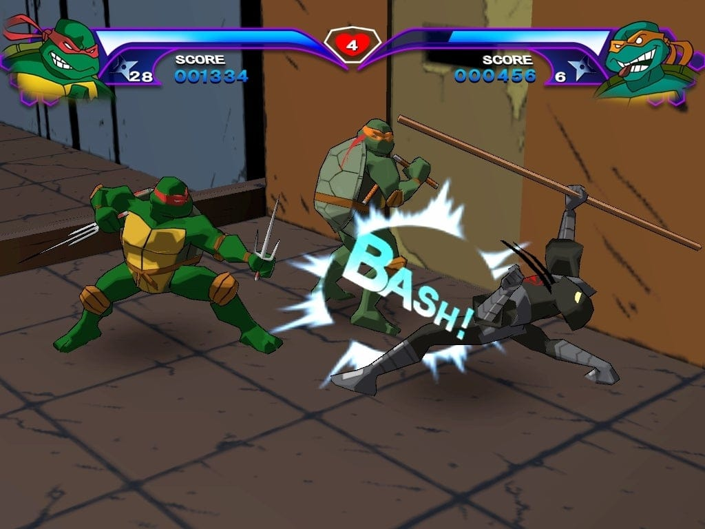

Teenage Mutant Ninja Turtles 2: Battle Nexus

- Developer(s): Konami.
- Publisher(s): Konami.
- Platform(s):Microsoft Windows, PlayStation 2, Xbox, GameCube, Game Boy Advance (separate version).
- Release:North America: October 19, 2004 ;
Japan: December 2, 2004 .
- Mode(s): Single-player, Multiplayer ( up to 4 players).
is a 3D side-scrolling beat 'em up game based on the 2003 animated series, where players can switch between the
four turtles — Leonardo, Donatello, Michelangelo, and Raphael — each with their own unique stats and abilities.
The gameplay features combat-focused levels with light puzzle-solving and exploration set in various "Nexus"
worlds. As players progress, they can unlock new combos, weapons, and characters, and the game also includes the
classic 1989 TMNT Arcade Game as a bonus unlockable in the console versions.